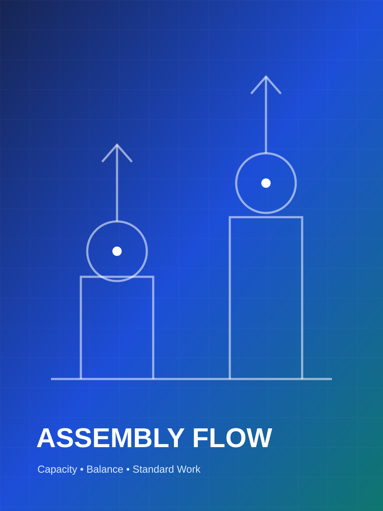

Manufacturing Engineering & Operational Excellence · Indonesia
Building manufacturing systems that improve performance— and sustain it.
Manufacturing engineering and operational excellence professional with 10+ years of experience strengthening production systems across discrete and process manufacturing environments. I connect process capability, production control, quality systems, operational data, and cross-functional execution to improve throughput, OEE, cost, reliability, and management visibility.
Manufacturing Systems
Operational Excellence
Continuous Improvement
10+ years
manufacturing experience
+42%
throughput improvement
85.2%
OEE achieved
01 / Professional profile
Engineering discipline, operational judgment, and cross-functional execution.
I connect factory-floor realities with management priorities—turning operational data, technical causes, and business requirements into manufacturing systems that deliver sustainable performance.
My career has developed across quality control, process control, process engineering, and production management. Across each role, the objective has remained consistent: build manufacturing systems that perform reliably under real operating conditions.
I approach performance gaps as system problems rather than isolated incidents. I identify constraints, quantify losses, align the relevant functions around root causes, and convert improvements into practical standards, ownership routines, and performance controls that continue to work after the project is completed.
Operational Excellence
Improve throughput, productivity, OEE, quality, cost, and operational reliability through structured performance management and continuous improvement.
Manufacturing Systems
Design and strengthen production flow, process controls, capacity, workforce readiness, quality checkpoints, material readiness, and operating standards.
Leadership & Execution
Align engineering, production, quality, planning, materials, and management around clear priorities, responsibilities, and measurable results.
02 / Capability portfolio
Capabilities that connect the factory floor with management priorities.
A balanced capability portfolio covering manufacturing engineering, operational management, structured problem-solving, performance control, and cross-functional execution.
03 / Selected impact
Manufacturing improvements defined by measurable operational results.
Each case study presents the operating challenge, engineering analysis, implemented manufacturing system, and verified performance impact.
04 / Performance snapshot
Results that remain credible in an operating review.
Daily production output improvement
Downtime reduction
Missed-process reduction
OEE improvement
Unit manufacturing cost reduction during production scale-up
05 / Career journey
Progressive responsibility across quality, engineering, and production leadership.
A career developed through direct manufacturing exposure, process ownership, production management, and system-level operational improvement.
06 / Methods & development
Structured methods for stable, measurable factory performance.
Practical engineering and management methods used to diagnose performance gaps, implement corrective systems, and sustain operational improvements.
Lean Manufacturing
Improve production flow through waste identification, standard work, workload balance, capacity alignment, visual control, and continuous improvement.
RCA & CAPA
Use structured problem-solving to identify systemic causes, define corrective and preventive actions, assign ownership, and prevent recurrence.
OEE & KPI Control
Control availability, performance, quality, downtime, capacity, throughput, losses, and management visibility through clearly defined operating metrics.
Production Leadership
Translate business targets into practical daily execution through planning, workforce alignment, operating discipline, escalation, and cross-functional follow-up.
07 / Manufacturing portfolio
A visual view of process, people, and performance systems.
Visual records of manufacturing systems, improvement projects, operational reviews, team development, and factory performance initiatives.
Owner gallery editor
Add project and factory images
Choose or drag multiple images. Uploads are stored privately in this browser for preview. Use the guide included in this project to publish images permanently on GitHub Pages.
No local images added yet.



08 / Leadership signal
A management approach built on clarity, discipline, and execution.
Three principles that guide how manufacturing challenges are diagnosed, improved, and sustained.
Start with actual operating conditions, quantify the performance gap, and identify the constraint that limits the entire system.
Data-driven diagnosis
An improvement becomes valuable when the solution is converted into a clear, repeatable, and controlled operating method.
System and standard design
Performance is sustained when engineering, production, quality, planning, materials, and leadership operate through one aligned management system.
Cross-functional execution
09 / Contact
Ready to strengthen your manufacturing system.
Open to leadership opportunities and transformation assignments in Manufacturing Engineering, Production Management, Operational Excellence, Plant Operations, Process Engineering, and Continuous Improvement.